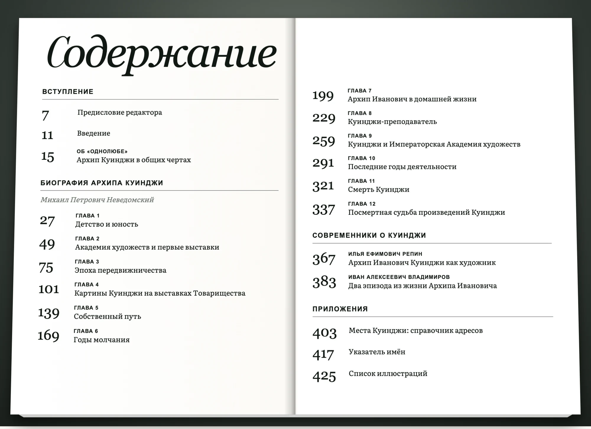
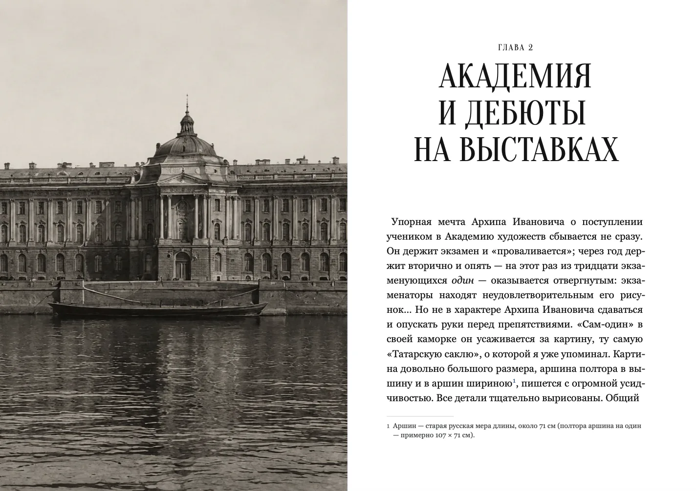
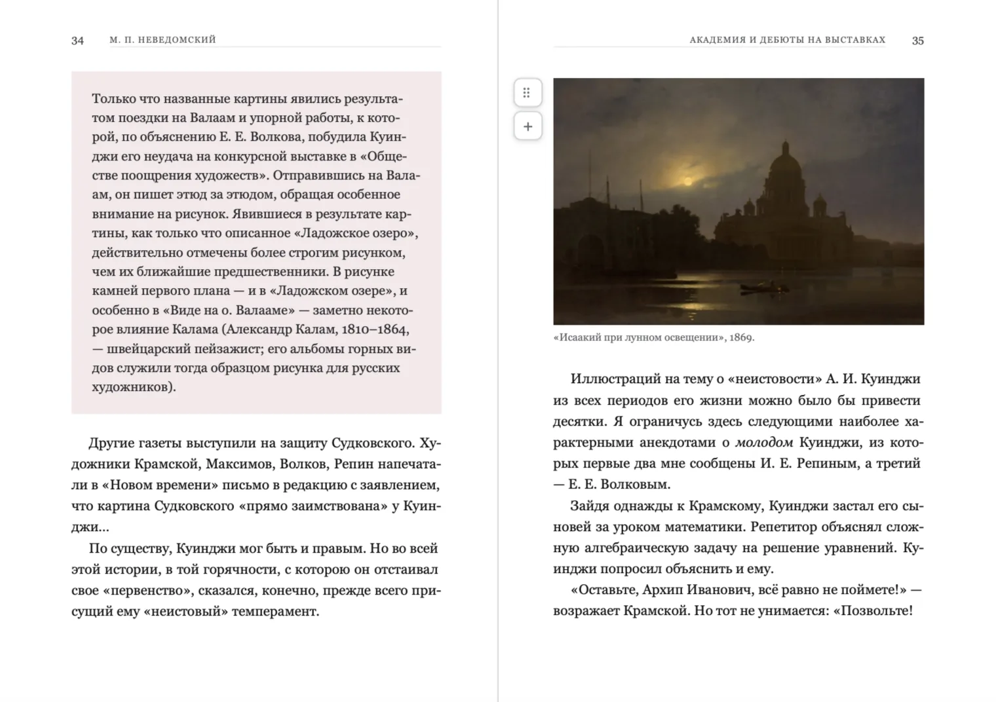
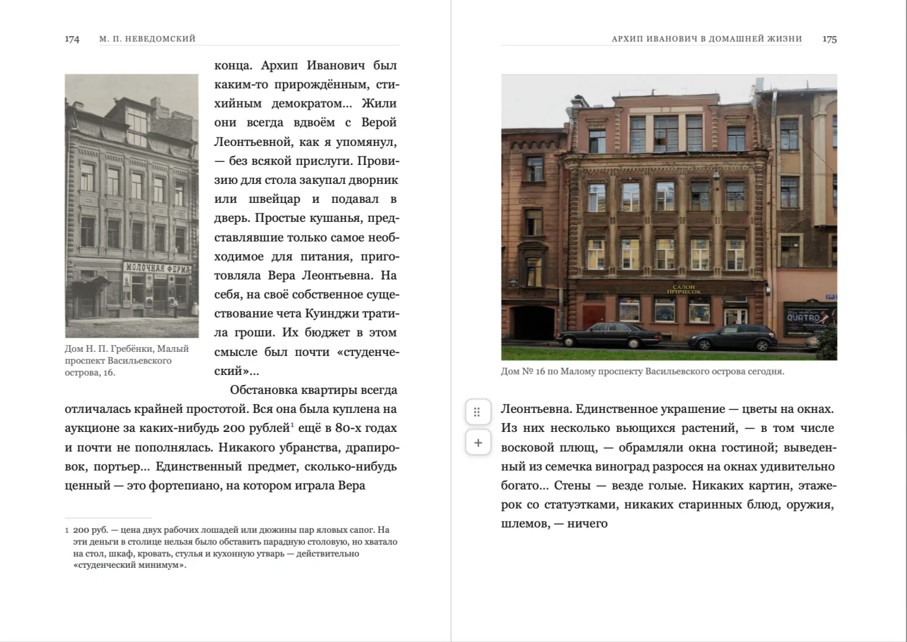

Тактильная концепция
Окно в пространство света
Льняная фактура, природные оттенки и вклеенная репродукция превращают обложку в окно, через которое в книгу входят свет и воздух пейзажей Куинджи.
1 / 3
Концепция современного переиздания монографии М. П. Неведомского: редактура исторического текста, новая структура, комментарии, иллюстрационная программа и визуальная система книги.
После выставки Куинджи в Русском музее я искала свежую и увлекательную книгу о художнике, но не нашла её ни в музейных магазинах, ни среди новых изданий. Поэтому решила разработать такую книгу сама — от редакционной идеи до макета и производственного плана.
Интерес к русскому искусству XIX века продолжает расти, однако между репринтами дореволюционных исследований и дорогими коллекционными альбомами почти нет доступного научно-популярного издания об Архипе Куинджи. Существующие книги либо сохраняют архаичный язык и структуру, либо рассчитаны прежде всего на специалистов и коллекционеров. При этом масштаб музейных выставок и постоянный интерес к картинам художника показывают, что разговор о Куинджи нужен гораздо более широкой аудитории.
Основой нового издания стала монография Михаила Петровича Неведомского — современника Куинджи и одного из первых исследователей его творчества. Это ценный исторический источник, сохранивший живой взгляд человека той эпохи, но сегодня текст нуждается в редакторском переосмыслении.
Моя цель — сохранить авторский голос и историческую достоверность исследования, одновременно превратив его в понятную современную нон-фикшн-книгу. Новая структура, комментарии, архивные фотографии и качественные репродукции должны помочь читателю не только проследить биографию художника, но и увидеть, почему свет стал главным героем его искусства.
Оригинальное издание в библиотеке Polona ↗Издание рассчитано на читателей старше 18 лет, которые интересуются искусством, культурой и историей, но не обязательно обладают специальной искусствоведческой подготовкой. Это аудитория Ad Marginem, МИФ, «Альпины» и Individuum, посетители Третьяковской галереи, Русского музея, Эрмитажа и региональных художественных музеев — люди, которым важно получить содержательную, визуально насыщенную и при этом доступную по цене книгу.
В проекте я перевела текст с дореволюционной орфографии на современную, адаптировала устаревшие языковые конструкции и синтаксис, сохраняя интонацию Неведомского. Я разработала новую структуру, предусмотрела редакторские комментарии к историческому и культурному контексту, собрала иллюстрационную программу из репродукций и архивных материалов, а также продумала обложки, макет и производственные параметры книги объёмом около 430 страниц.
Для сопоставления версий текста, первичной вычитки и поиска визуальных решений я использовала AI-инструменты. Чтобы проверить систему вёрстки на практике, я собрала интерактивный книжный редактор и с его помощью подготовила показательные развороты. Отбор вариантов, постановку задач и все редакторские решения выполняла самостоятельно.
Концепции показаны последовательно, как в книжном интернет-магазине: выбирайте ракурс по миниатюре или листайте стрелками.
Льняная фактура, природные оттенки и вклеенная репродукция превращают обложку в окно, через которое в книгу входят свет и воздух пейзажей Куинджи.
1 / 3
Хотелось создать чистый минималистичный дизайн и сохранить адекватный бюджет. Узкая полоса пейзажа становится оптическим центром, крупная типографика задаёт характер, а стандартный твёрдый переплёт не требует дорогих конструктивных решений.
Умеренный бюджет · твёрдый переплёт · серийная печать1 / 3
Из темноты выступает сам Куинджи. Фольгированное название или подпись автора усилит эффект внутреннего свечения и будет меняться при движении книги.
Музейное издание · портрет · фольга1 / 3
Формат выбран с учётом большого объёма текста и необходимости размещать полноцветные репродукции без потери качества.
Содержание показывает иерархию без декоративного шума: крупные страницы, ясные тематические блоки и спокойный ритм.

Три показательных сценария: вход в главу, редакторская врезка и работа с документальным изображением.

Полосная фотография Академии задаёт исторический контекст, а правая страница начинает повествование крупным заголовком и плотным набором.

Большое пояснение отделено от основного текста спокойным цветовым полем; рядом репродукции сохраняют качество и не превращают книгу в альбом.

Исторический снимок сопоставлен с современным видом адреса, превращая комментарий в небольшой визуальный сюжет.
Редакция «Искусство» · переиздание монографии М. П. Неведомского «Архип Куинджи».
График рассчитан для готовой русскоязычной рукописи: этапы написания и перевода не требуются. Подготовка иллюстраций и прав идёт параллельно с редакторскими комментариями, а разработка обложки — с работой над книжным блоком. На печать, переплёт и приёмку сохранён полный цикл в 6 недель. Выпуск 1 декабря позволяет книге выйти к новогоднему сезону и стать отличным подарком для читателей, интересующихся искусством.
| Этап | Срок | Даты |
|---|---|---|
| Постановка целей, определение ЦА | 1 день | 29.05 |
| Структура и содержание книги | 3 дня | 30.05–01.06 |
| Техническое задание и разработка обложки (параллельно с книжным блоком) | 12 недель | 30.05–22.08 |
| Вычитка текста и разметка комментариев | 3 недели | 02.06–22.06 |
| Редакторские комментарии | 2 недели | 23.06–06.07 |
| Иллюстрации и очистка прав (параллельно с комментариями) | 4 недели | 23.06–20.07 |
| Литературная редактура и корректура | 3 недели | 07.07–27.07 |
| Тексты для обложки | 1 неделя | 31.07–06.08 |
| Контрольная вычитка | 1 неделя | 07.08–13.08 |
| Вёрстка и подготовка макета | 2 месяца | 14.08–13.10 |
| Оригинал-макет, финальная проверка файлов, бюджета и прав | 1 неделя | 14.10–20.10 |
| Печать, переплёт, приёмка и выпуск | 6 недель | 21.10–01.12 |
Если проект заинтересовал — свяжитесь со мной.
Все редакторские решения, отбор вариантов и постановка задач — мои. Развороты собраны в книжном редакторе, сделанном под этот проект; AI помогал со сверкой версий текста и перебором визуальных вариантов.